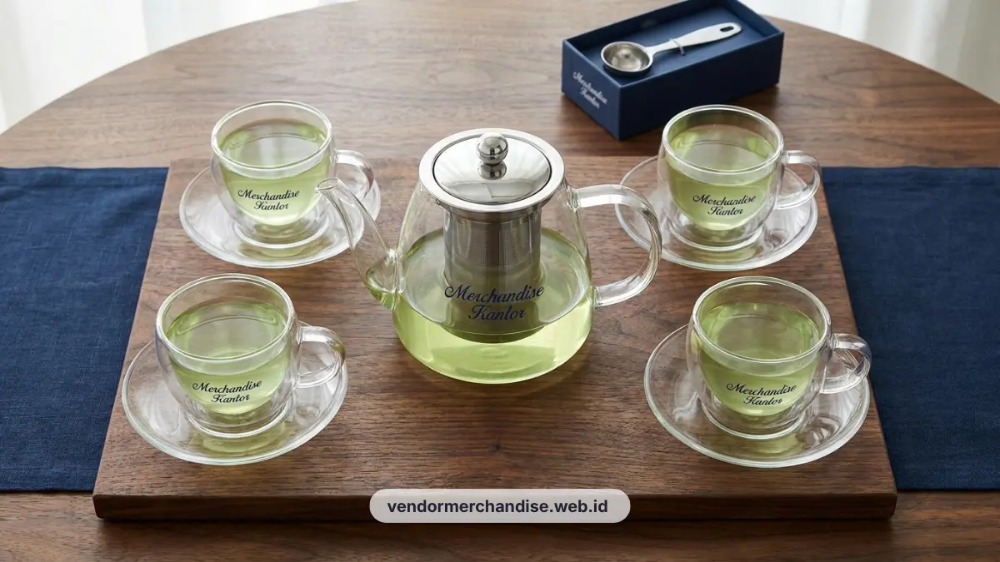

Ruang meeting merupakan pusat negosiasi dan interaksi penting antara perusahaan dengan klien atau mitra bisnis. Penyajian minuman hangat yang dikemas rapi dalam tea set custom logo mampu menghadirkan suasana hospitality yang hangat sekaligus memperkuat identitas brand di meja rapat.
Kenapa Tea Set Jadi Detail Penting Kantor Modern
Tea set custom logo menjadi detail penting karena langsung terlihat oleh klien saat sesi meeting berlangsung, sehingga turut membentuk kesan profesionalisme perusahaan.
Ruang meeting yang dilengkapi tea set berkualitas memberikan pengalaman hospitality yang lebih baik dibandingkan penggunaan gelas atau cangkir standar tanpa identitas brand. Detail semacam ini sering menjadi pembeda antara kantor yang terkesan biasa dengan kantor yang terkesan menjaga standar layanan tinggi terhadap tamu dan klien.
Material dan Desain yang Direkomendasikan untuk Tea Set Perusahaan
Material porselen dengan finishing glossy dan kaca tempered bening menjadi dua pilihan utama untuk tea set perusahaan yang digunakan di ruang meeting.
Porselen umumnya dipilih karena memberikan kesan elegan dan cocok untuk ruang meeting eksekutif, sementara kaca tempered lebih sering digunakan pada ruang meeting dengan konsep modern minimalis. Desain sebaiknya mengikuti palet warna brand perusahaan agar tea set terlihat menyatu dengan elemen interior ruang meeting lainnya, termasuk taplak meja dan dekorasi pendukung.

Cara Custom Logo pada Tea Set Perusahaan
Custom logo pada tea set dapat dilakukan melalui teknik cetak sablon, decal keramik, atau ukir laser tergantung jenis material yang digunakan.
Untuk material porselen, teknik decal keramik umumnya menghasilkan cetakan logo yang lebih tahan lama meskipun sering dicuci. Sementara pada material kaca, teknik sandblasting atau cetak UV menjadi opsi yang lebih tahan gesekan. Perusahaan disarankan meminta contoh hasil cetak sebelum melakukan pemesanan dalam jumlah besar, guna memastikan detail logo tercetak sesuai panduan brand.
Kombinasi Tea Set dengan Welcome Kit Klien
Tea set custom logo sering dikombinasikan dengan welcome kit lain seperti notebook, pulpen, atau souvenir teknologi dalam satu kemasan presentasi untuk klien penting.
Kombinasi ini umumnya digunakan pada momen kunjungan klien pertama kali atau acara serah terima kerja sama, di mana perusahaan ingin memberikan kesan menyeluruh mulai dari sesi meeting hingga cinderamata yang dibawa pulang klien. Paket kombinasi semacam ini dapat disesuaikan dengan anggaran dan skala acara yang direncanakan.
Untuk melengkapi kebutuhan merchandise korporat lainnya, lihat juga pembahasan lengkap paket merchandise kantor eksklusif untuk klien korporat Jakarta pada artikel pilar terkait.

Pesan Tea Set Perusahaan Custom Logo Sekarang
Lengkapi ruang meeting eksekutif perusahaan Anda dengan tea set custom logo dari Vendor Merchandise Kantor. Tim kami siap membantu menentukan material, desain, dan jumlah pemesanan yang sesuai kebutuhan ruang meeting Anda di Jakarta. Hubungi Vendor Merchandise Kantor untuk konsultasi desain dan penawaran harga tea set perusahaan.